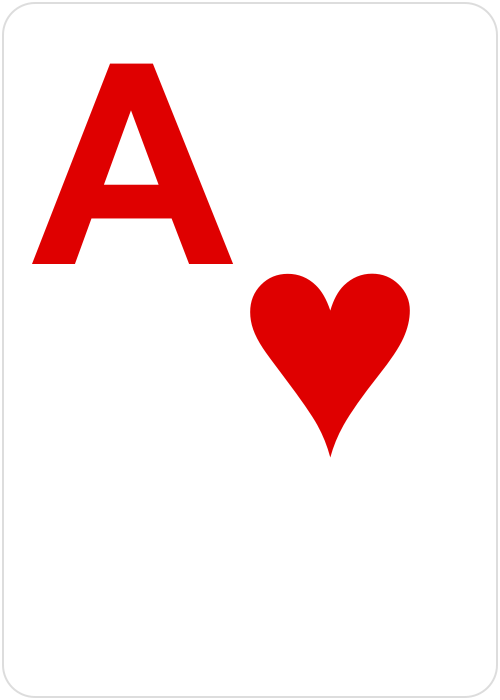
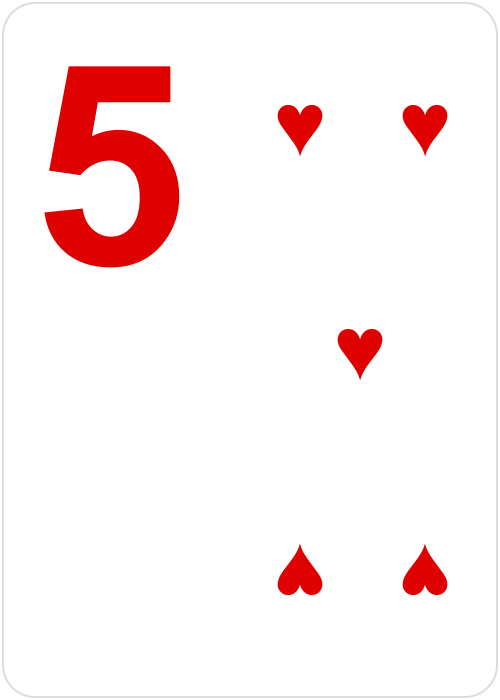
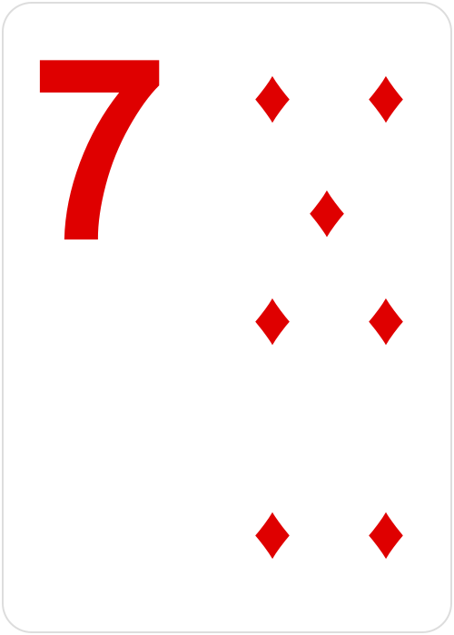
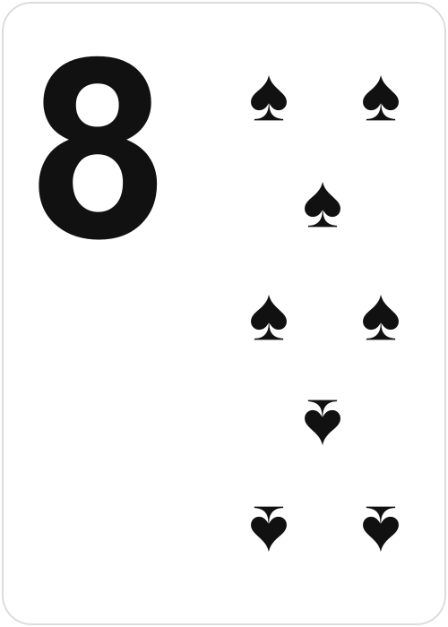
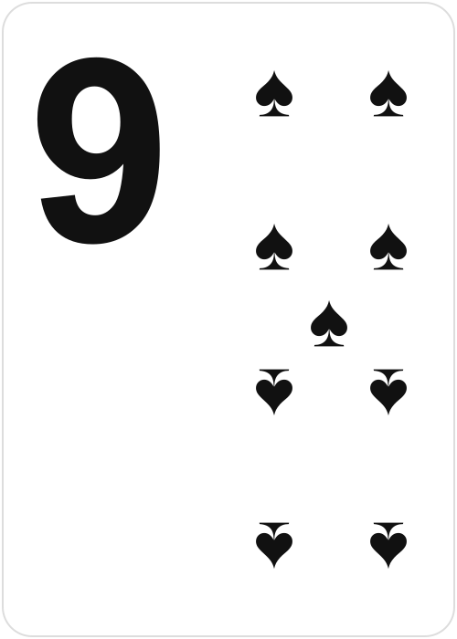
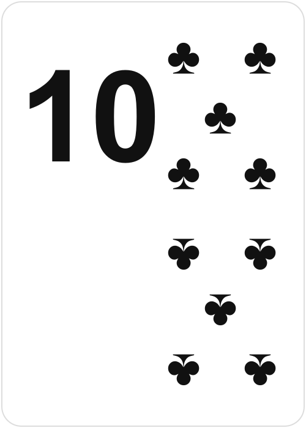
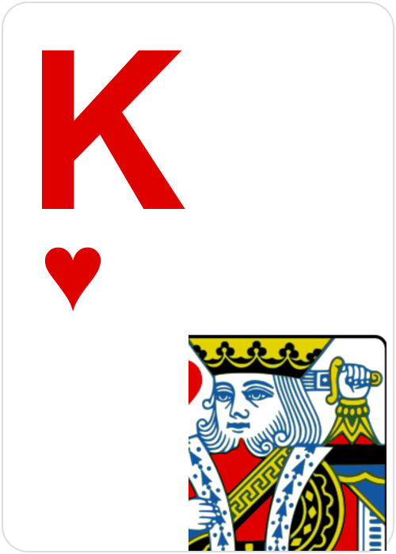
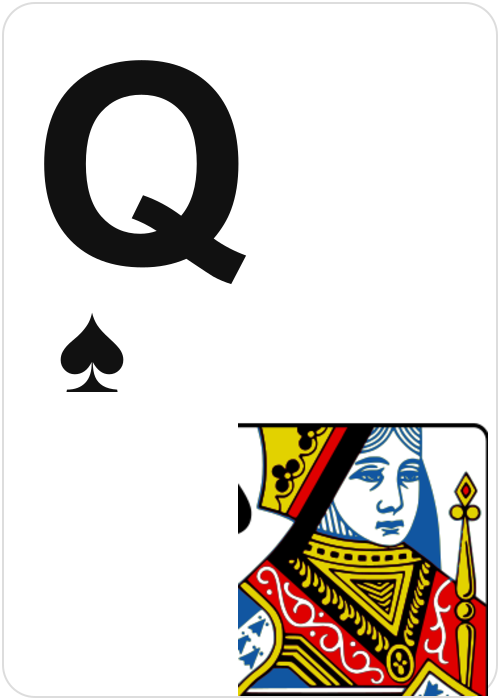
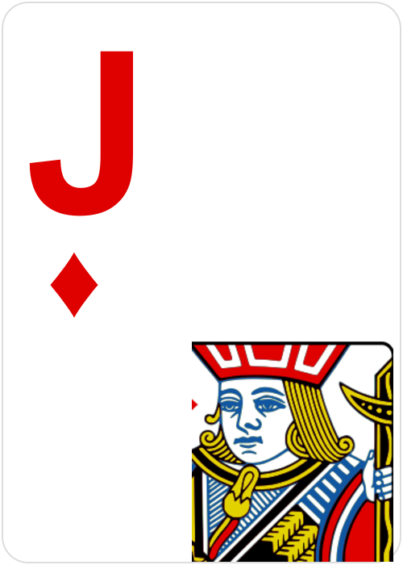

Big Arial rank in the suit colour (upper-left), pips arrayed on the right, and for face cards the single head clipped from the Classic deck (lower-right). Tell me what to tweak.









Only the top ~26% of a covered card shows — so a covered card gives you its rank + colour, but not which red/black suit (pips are hidden). For tableau play only colour matters; say the word if you want a small suit pip next to the rank so exact suit shows even when overlapped.